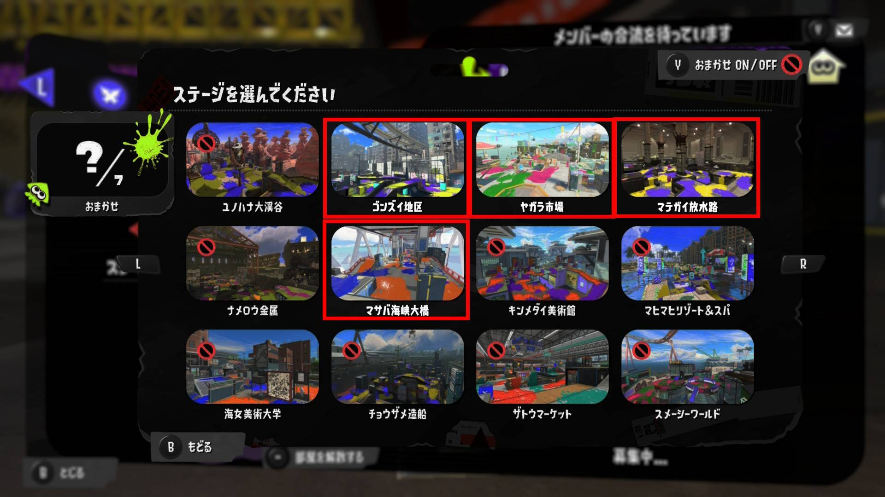
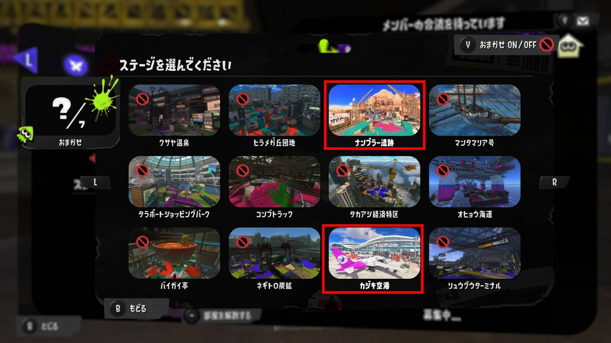
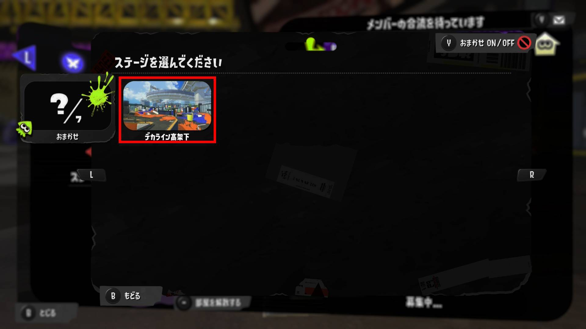

Overview
大会概要
| 開催日 | 2026年8月22日（土）22:00〜 |
|---|---|
| 方式 | 個人エントリー／東軍 vs 西軍 団体戦 |
| 使用ツール | 予選：各チームのヘヤタテ／東西決戦：運営ヘヤタテ |
| 配信 | 運営配信あり（Splathon限定公開） |
| 運営 | かがみん・いかおち・のほほ |
ステージ（おまかせロスト）
カジキ空港
ゴンズイ地区
デカライン高架下
ナンプラー遺跡
マサバ海峡大橋
マテガイ放水路
ヤガラ市場



Flow
全体の流れ
| 1 | 隊ごとに予選（敵軍と総当たり） |
|---|---|
| 2 | 騎馬隊の東西代表による決戦（予選結果でアドバンテージ発生） |
| 3 | 鉄砲隊の東西代表による決戦（予選結果でアドバンテージ発生） |
| 4 | 決戦2戦が1勝1敗の場合、天下分け目の最終決戦 |
Rules
🚩 予選（敵軍と総当たり）
ルール順
- ガチホコ
- カウンターピック（1戦目負けたチームが【ガチホコ／ガチエリア／ガチヤグラ】から選択）
- カウンターピック（2戦目負けたチームが【ガチホコ／ガチエリア／ガチヤグラ】から選択）
同じルールを選択することも可能です（ホコ→ホコ→ホコもOK）。BO3（2戦先取）ではありません。必ず3試合行ってください。
🤝 代表戦とは
各チームから1人ずつ（＋いずれかのチームから1人）選出した合同チーム同士で戦う試合です。
出場選手の選出方法は大会当日にお知らせします。
代表戦の勝利ポイントは、出場選手の所属チームに加算されます。
🎌 東西決戦
まず騎馬隊の決戦を実施したあと、次に鉄砲隊の決戦を実施します。予選でより多くのポイントを得た軍が、1勝のアドバンテージを獲得した状態で東西決戦を行います。
ルール順（3本先取）
- ガチホコ
- ガチエリア
- ガチヤグラ
- ガチホコ
- ガチエリア
騎馬隊＋鉄砲隊の結果が2勝0敗となった場合、2勝した軍が優勝。1勝1敗の場合は「天下分け目の最終決戦」を行います。
🏆 天下分け目の最終決戦
引き続き東西決戦（鉄砲隊）に出場した2チームによって行います。東西決戦における各軍の勝利試合数を合計し、負けている軍が勝利数の逆転までを連勝できればその軍の優勝となります。ルール順は東西決戦と同じです。
回線落ちの扱い
| 1回目・30秒以内 | 再試合（ステージ・ブキ・ギアはそのまま） |
|---|---|
| 1回目・31秒以降 | 試合継続 |
| 2回目以降 | 秒数に関わらず試合継続 |
※ 1回目、2回目はチームごとのカウントとします。（例：Aチームが20秒で回線落ち⇒再試合 その後、Bチームが15秒で回線落ち⇒再試合 さらにAチームが20秒で回線落ち⇒試合継続）
❓ QA
Q. 東西決戦の結果、1勝1敗かつ勝利試合数が同じ場合は？
A. 天下分け目の最終決戦を行い、1勝した軍の優勝となります。
Q. 予選の結果、東西の勝利ポイントが同じ場合は？
A. アドバンテージなしとします。